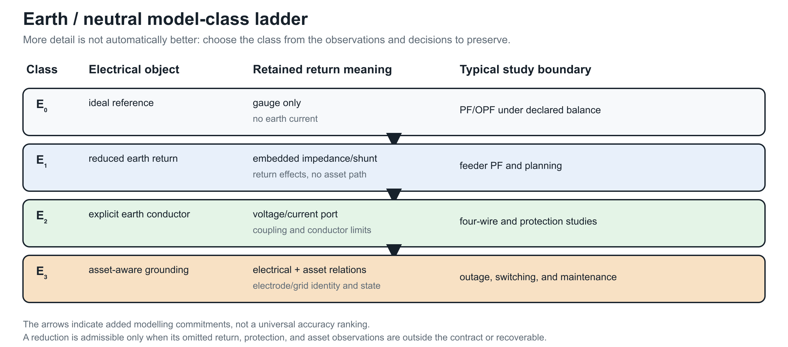

Earth, neutral, and reference model classes
Page status: scoped model-class taxonomy with a numerical E₂ explicit-earth/protection witness; asset-aware protection studies remain future work.
Scope: reduced-earth, neutral/grounding-factor, and explicit-earth model classes in the declared steady-state fixtures. Evidence: definitions, impedance constructions, and scoped numerical witnesses. Numerical optimality: no protection or network optimization result is claimed by the taxonomy or fixtures. Unresolved boundary: source-faithful earth-return data, asset-aware protection, uncertainty, and independent engineering review.
“Ground” is used for several different objects in power-system models. This book distinguishes a mathematical voltage reference, a neutral conductor, an earth-return path, and a physical grounding asset. A representation must state which of these it contains before a reduction or fault claim is interpreted.
Four distinct meanings
- Reference: a gauge choice such as $U_0=0$. It fixes coordinates but does not carry current or represent soil impedance.
- Neutral: an explicit conductor or terminal with its own voltage, current, impedance, and limits. It may be grounded at one or more locations.
- Earth return: a conductive path through soil, ground wire, shield wire, or a reduced earth-impedance model. It can carry current and couple phases.
- Grounding asset: an electrode, grid, bond, transformer grounding point, or protection object with identity, state, and maintenance semantics.
Conflating these meanings can make a phase-to-neutral reduction appear exact while deleting a ground-fault path or a neutral-to-earth constraint.
Model classes
| Class | Electrical representation | Typical use | What it cannot answer by itself |
|---|---|---|---|
| $E_0$ ideal reference | algebraic reference or gauge; no earth current variable | balanced transmission PF/OPF | earth-return current, grounding impedance, fault path |
| $E_1$ reduced earth return | earth effects embedded in sequence, Carson, or fitted impedance/shunt blocks | feeder PF, planning, approximate fault studies | identity and state of the physical earth path unless linked |
| $E_2$ explicit earth conductor | conductor or port with voltage/current and mutual coupling | four-wire, shield-wire, grounding, protection studies | soil detail beyond the selected conductor model |
| $E_3$ asset-aware grounding | $E_1$ or $E_2$ plus electrodes, bonds, grids, protection and maintenance relations | switching, outage, protection, asset decisions | none beyond the declared physical and study model |
The classes are not a strict accuracy ladder. $E_1$ may be the right model for a study whose observations are terminal voltages, while $E_3$ is required for a grounding-asset outage decision even if both use the same external admittance.

The ladder is generated by experiments/render_earth_return_ladder.py. Its arrows indicate added modelling commitments, not a universal accuracy ranking.
Scope contract for reductions
A transformation involving neutral or ground must record:
- the reference convention and gauge;
- whether neutral and earth are separate ports;
- the earth-return class $E_0$–$E_3$;
- the number and location of ideal or finite grounding points;
- whether line shunts, mutual coupling, and ground-fault currents are retained;
- which voltage, current, protection, and asset observations are preserved;
- a recovery map for eliminated neutral or earth quantities.
For example, the phase-to-neutral map in the circuit-coordinate chapter can be exact for phase-to-neutral terminal behaviour under sparse compatible grounding, while being insufficient for $E_2$ neutral-to-earth voltage limits. The Geth–Heidari–Koirala reduction is useful precisely because it states grounding and radiality conditions rather than treating a three-wire picture as an automatic physical deletion [39].
Setting the reference potential to zero is not the same as setting a conductor voltage to zero, and neither operation removes an earth-return current. A reduced model must say which variable was fixed, eliminated, or merely not represented.
Consequences for the running network
The running fixture uses a reduced-earth $E_1$ model with an explicit neutral and grounding factor: $h_n$ is a finite neutral-to-earth shunt, the four-wire line retains a neutral terminal, and the source reference is declared separately. It does not contain an explicit earth conductor or earth port, so it is not an $E_2$ model. The fixture does not claim a detailed soil or electrode model, so grounding-asset decisions remain outside its current numerical scope. Future explicit-earth cases should add a physical earth conductor or grounding-grid factor and test recovery of ground currents, neutral voltages, and protection observations. The separate E₂ witness below provides that minimal explicit-earth check without changing the classification of the running fixture.
A useful comparative case
The BMOPFTools grounding tutorial suggests a compact experiment that fits the book's preservation story. Hold the line matrix, load, and bus graph fixed and vary only the customer-end grounding relation:
| State | Added relation | Observations that should change |
|---|---|---|
| floating neutral | no local neutral-to-reference path | neutral-to-earth voltage and return-current allocation |
| impedance grounded | finite electrode shunt | electrode current, neutral displacement, and phase-to-neutral voltage |
| perfectly grounded | ideal voltage constraint | neutral voltage by construction and a different current path |
| explicit earth return | earth conductor or factor with its own impedance | earth current, neutral current, and grounding-asset limits |
This is not four different graphs in the simple-topology sense. It is one asset/connectivity view with four electrical and decision models. A study that only asks whether buses are connected sees no change; a study that asks for neutral limits, touch voltage, fault current, or electrode maintenance does. The comparison is now instantiated in the scoped artifact experiments/generated/load-grounding-witnesses.json. It keeps the same two-conductor bus–branch graph and varies only the customer-end relation. The recorded neutral-voltage magnitudes are approximately 0.14184 (floating), 0.10026 (finite impedance), and 0.00000 (ideal grounding); the corresponding ground-current magnitudes are 0, 0.27807, and 0.88999 per unit. These values make the decision point concrete without claiming that the three-state scalar fixture represents an explicit-earth-conductor or protection study.
The comparison is therefore evidence for the $E_0$–$E_3$ scope contract, not a reason to promote “grounded” to a single graph attribute.
Explicit earth conductor and a protection observation
The same generated artifact contains a three-node linear fixture with phase, neutral, and earth conductor voltages. A finite neutral-to-earth bond is retained as a separate relation. Three resolved states are compared:
| State | Earth voltage magnitude | Earth-conductor current | Fault current | Protection observation |
|---|---|---|---|---|
| earth in service | 0.04975 | 0.18540 | 0 | no trip |
| earth conductor maintenance outage | 0.14184 | 0 | 0 | no trip |
| phase-to-earth fault | 0.52173 | 1.94437 | 2.81114 | trip |
| neutral-to-earth fault | 0.07851 | 0.29260 | 0.25112 | no trip |
The outage and fault rows show why an explicit earth port cannot be replaced by an ideal reference: the earth conductor has its own current, availability, protection observation, and asset identity. The witness also records earth-node voltage as a touch-voltage observation: the declared 0.10 pu limit passes in service (0.04975 pu) and fails for both the maintenance outage (0.14184 pu) and the faults (0.52173 pu and 0.07851 pu). The earth-conductor maintenance decision is retained with its asset state and cost. Protection uses a CT ratio of 10 and a 0.20 pu secondary pickup: the phase fault measures 0.28111 pu, trips after 0.2466 s under the declared inverse-time curve, while the neutral fault measures 0.02511 pu and does not trip. A separate saturation probe caps the phase-fault secondary current at 0.18 pu and changes that trip decision. These are declared sensitivity models, not relay or CT standards. This is a deliberately small E₂/E₃ boundary witness and does not model relay curves beyond the illustrative curve, CT electromagnetic behaviour, or a complete fault-class enumeration.